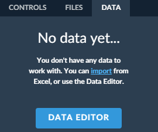
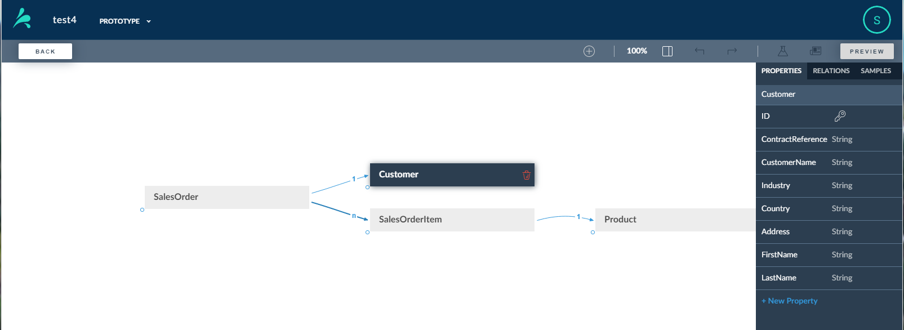
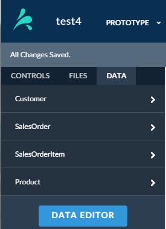

The List Report is the first page of a smart template prototype
and is used to filter a few dedicated objects from a large set of objects. The
List Report contains a filter bar above a table.
Prerequisites
You need a data model before you can use Smart Templates. Make sure that the data
model you want to use is available via your computer.
Procedure
- Create a project, then add a Smart Template List Report.
Note
When you add a Smart Template List Report, the
Data tab is displayed by default.

- From the Data tab do one of the following:
- Select import to import a data model from
Excel.
- Select the Data Editor button.
- Add objects to create your data model.
See the section on Data Models and the Data Editor for more information.

- Select the Back button to return to the list report. The
Data panel is now pre-populated with properties from
your data model.

- On the right side of the screen under List Report, select the object that you
want to use as your Main Object. Each list report and
object page has its main object. When you select the main object you bind the
list report to the object.
Note
Once you have selected your main object, you are ready to configure your
list report.